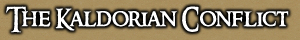
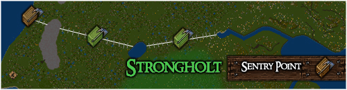

<TABLE BORDER CELLPADDING="0" background="bocimages/scrollbgdark.gif" width="100%">
	<TR>
	<!-- Header or whatever -->
	<BR>
		<TD valign="top" class="notes">
		<B><U>The Army Of
	      Kaldor</U></B><BR>
	      <I>Headquarters: </I>Strongholt, and Serpent's Hold<BR>
	      <I>Leaders: </I>General Paladis, Commander Soulshadow <I><BR>
	      Diety: </I>Raza, God of War.<I><BR>
	      Uniform: </I>Mixtures of emerald green and shadow garb
	      <P>
	      <I>Months passed, with little contact between Covian and Kaldorian forces
	      until.. a new campaign began.</I>
	      <P>
	      <BR>
	      After being repelled from Cove, perhaps through uninterest rather than defeat,
	      the Kaldorian Army now finds itself in a defensive position. Swearing vengance
	      for occupying its town, Cove has begun attacking the north of the Kaldorian
	      fortress, Strongholt.
	      <DIV align="center">
		
	      </DIV>
	      <P>
	      The Kaldorians have entrenched themselves well, and stand &nbsp;firmly in
	      what Militia officers call "The Kaldorian Line";<BR>
	       8thAugust 2005: Brutal
	      Victory!<BR>
	       3rd August 2005: Supply Caravan
	      Shredded By Kaldorians!<BR>
	       28th July 2005: Covians Defend
	      Captured Sentry Point!<BR>
	       25th July 2005: Cove Militia
	      Attacks Kaldorian Line! <BR>
	      <BR>
	      <U><B>8th August 2005: Commander's Report - Gregor Eason</B></U><BR>
	      A victory for Cove! We have captured and secured a second Sentry Point on
	      the Kaldorian Line! T'was a fiercesome battle but turned victory with some
	      marvellous work from the Covian guardsmen. Alas, we fought for the third
	      Sentry Point and nay succeeded. But we have gained ground, and thats all
	      that matters in this Campaign!<BR>
	      <BR>
	      <U><B>3rd August 2005: Commander's Report - Gregor Eason</B></U><BR>
	      Bugger it! Seems the Kaldorians were scouting the Roads to the frontline
	      more extensively than first imagined. They were clearly able to pinpoint
	      strong points for which to launch ambushes upon our supply caravan. It looks
	      as if we'll either need to strengthen our Militia or find a new way of
	      transporting supplies. Perhaps a bit of both...<BR>
	      <BR>
	      <U><B>31st July 2005: Commander's Report - Gregor Eason</B></U><BR>
	      We have captured and secured one of the Kaldorian Sentry Points on their
	      defensive Line. Though Kaldorians will make us work to hold onto it, I firmly
	      believe this is achievable, and, furthermore, that we can claim the next
	      Sentry Point just East of our current position. But alas, stores are low.
	      Resources must be brought forward from Cove if we are to see this campaign
	      successful.
	      <P>
	      <BR>
	      Having been sighted by scouts as another province to conquer, the Kaldorian
	      Army marched its soldiers to the Baronship provinces in a bid to claim its
	      lands through brute force;<BR>
	       15th April 2005: Kaldorian
	      and Samurai counterattack!<BR>
	       13th April 2005: Cove
	      Reclaimed!<BR>
	       7th April 2005: Cove Sacked!<BR>
	       4th April 2005: Kaldorian
	      Samurai Army claims the Covian Shire!<BR>
	       31st March 2005: Samurai join
	      Kaldorians to secure northlands of Cove!<BR>
	       23rd March 2005: Kaldorians
	      battle Covians over Missing Leader Clue.<BR>
	       21st March 2005: Cove Militia
	      marches to Kaldor occupied Serpent's Hold.<BR>
	       1st March 2005: Covians and
	      Kaldorians clash at the local Orc Fort.<BR>
	       24th January 2005: Kaldorians
	      launch surprise assault on Cove Barracks!<BR>
	      <U><B><BR>
	      15th April 2005: Commander's Report - Gregor Eason</B></U><BR>
	      Ugh! Expected. A vicious counterattack from the Samurai and Kaldorians. Though
	      we were strong in number and fierce in spirit, our lines were broken and
	      the Barracks seized by the emerald army. However, the force nay led behind
	      an occupation garrison... They moved onto Cove, boasted their victory, and
	      then set sail..? I cannot understand why they took not the town. My only
	      thoughts are that this conflict has become too expensive for the Kaldorians,
	      what with their many lands to protect and their soldiers to feed. Perhaps
	      the legendary warriors have... lost... interest?
	      <P>
	      <U><B>13th April 2005: Commander's Report - Gregor Eason</B></U><BR>
	      Finally, a Victory. We were lucky. The intelligence reports attained were
	      correct. Kaldorians were few in number. But nevertheless, a victory; something
	      excellent for the Covian morale. With Commander Soulshadow in captivity in
	      a secret location, I feel we have some leverage in this war. Who knows...
	      Maybe we can negotiate for the Kaldorians to lay down their arms and turn
	      tail?...<BR>
	      Ha! Never. We'd release Soulshadow only to see her knocking at the gates
	      again, with an army of a thousand soldiers. Mmm...<BR>
	      We'll see where this goes. For now, I am tired from battle.
	      <P>
	      <U><B>9th April 2005: Commander's Report - Gregor Eason</B></U><BR>
	      Butchers! We've been thrown out of our town! Damn it!! I return to Cove to
	      find it occupied by Kaldorian soldiers, and Samurai who wish to claim it
	      for themselves. Oh, this will not do. This will NOT do!! We shall retake
	      it damn it!
	      <P>
	      <U><B>1st April 2005: Commander's Report - Gregor Eason</B></U><BR>
	      I have only been back a day, and I learn already of Cove being sacked. A
	      mighty battle was fought last eve, one where the Kaldorians and Samurai
	      conequered Covian, Yew, Vesperian, and Hospitaller forces. A truly magnificent
	      victory for them, and a terrible defeat for us.<BR>
	      If Cove is ever to be free again, then we must learn how to fight this Enemy.
	      It is obvious that facing them head on is suicide. We must develop some other
	      form of battle...
	      <P>
	      <U><B>1st April 2005: Scout's Report - Junior Guardsman Tiolas
	      Amildor</B></U><BR>
	      This is not good! I was on one of my early patrols around the provinces of
	      Cove, and suddenly it struck me that there were no peasants and traders using
	      the roads! On further investigation I went to our previous battle grounds
	      near one of our guard outposts and was horrified by what I found. The Kaldorians
	      and the crosseyed traitors (Samurai) have blocked off our main road, not
	      letting anyone travel south! <BR>
	      The peasants quickly got word that all who approach the blockade would perhaps
	      not return. Surely we can not let this deed go unpunished. <BR>
	      Also I picked up a few words from a conversation that a Kaldorian was trying
	      to conduct with a crosseye, and it seems their next target would be to destroy
	      our entire town and bring a fall to the Baron of Cove! As they spoke these
	      words I was discovered , and they followed me through the lands until I could
	      hide in a tree somewhere in the woods of Cove...<BR>
	      This is most troubling news! Seeing as our recent battle did not run so smoothly,
	      I believe we need help! And I dont think our Vesperian "friends" will aid
	      us!
	      <P>
	      <U><B>16th March 2005: Commander's Log - Gregor Eason</B></U><BR>
	      Again, we find a new Enemy. This time we fight neither orcs, nor bandits,
	      but professional soldiers. The Army of Kaldor has plagued the lands of Britannia
	      for many ages. As an aggressive and well trained force, it has had few defeats.
	      We have already engaged them in battle several times, with victory flourishing
	      only once. Even with its greatest fighters, Cove is struggling to survive
	      against these legendary warriors. Nay doubt we shall have to uncover some
	      new strategy to overcome these Kaldorians.<BR>
	      The Army is lead fearlessly by Commander Cal Soulshadow, my opposite number.
	      Her brutal discipline keeps the Kaldorian soldiers in check; and with a fierce
	      dedication to some War God known as "Raza", these warriors are seemingly
	      without peer.
		</TD>
	</TR>
</TABLE>
